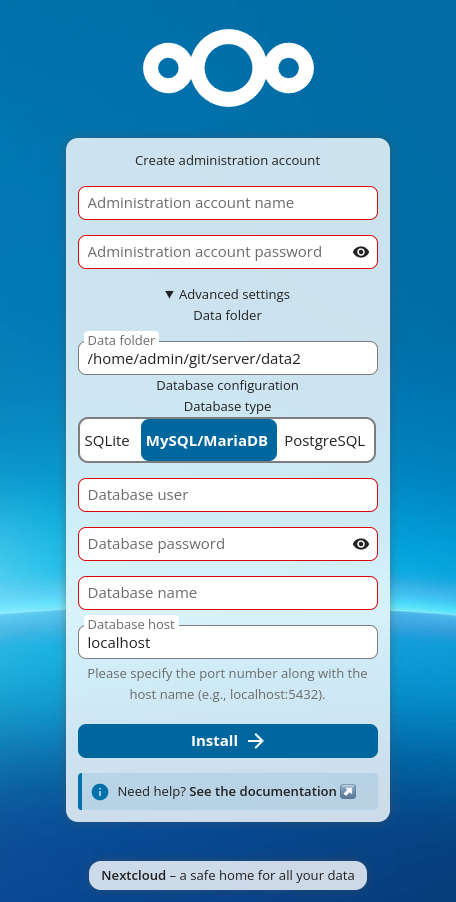
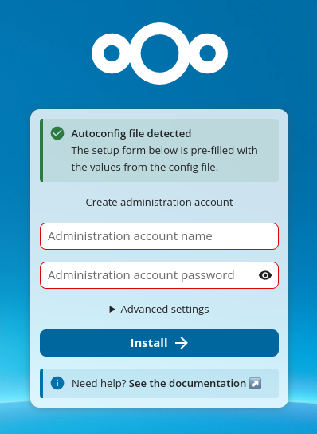
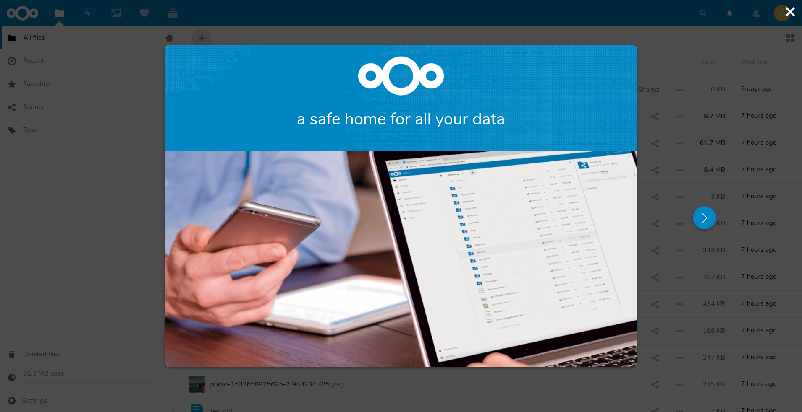
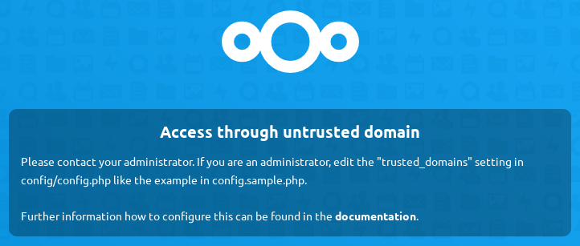

Installation wizard
Quick start
When Nextcloud prerequisites are fulfilled and all Nextcloud files are installed, the last step to completing the installation is running the Installation Wizard. This is just three steps:
Point your Web browser to
http://localhost/nextcloudEnter your desired administration account name and password.
Click Install.
{kind=link}

You’re finished and can start using your new Nextcloud server.
Note
The wizard includes a real-time password strength indicator that rates your chosen password from “too weak” to “extremely strong”. For security, choose a password rated at least “strong”.
Of course, there is much more that you can do to set up your Nextcloud server for best performance and security. In the following sections we will cover important installation and post-installation steps.
Data directory location
Expand the Storage & database section to expose additional installation configuration options for your Nextcloud data directory and database.
You should locate your Nextcloud data directory outside of your Web root if you
are using an HTTP server other than Apache, or you may wish to store your
Nextcloud data in a different location for other reasons (e.g. on a storage
server). It is best to configure your data directory location at installation,
as it is difficult to move after installation. You may put it anywhere; in this
example it is located in /opt/nextcloud/. This directory must already exist,
and must be owned by your HTTP user.
Note
If the wizard detects that your .htaccess file is not working (for
example, because you are using Nginx or another non-Apache web server), it
will display a Security warning indicating that your data directory and
files may be accessible from the internet. Refer to the
Hardening and security guidance documentation for guidance on
securing your data directory.
Database choice
SQLite is the default database for Nextcloud Server. When SQLite is selected, the wizard displays a Performance warning:
SQLite should only be used for minimal and development instances. For production we recommend a different database backend. If you use clients for file syncing, the use of SQLite is highly discouraged.
Supported databases are MySQL, MariaDB, Oracle, and PostgreSQL, and we recommend MySQL/MariaDB. Your database and PHP connectors must be installed before you run the Installation Wizard. When you install Nextcloud from packages all the necessary dependencies will be satisfied (see Installation on Linux for a detailed listing of required and optional PHP modules). If only one database driver is available, the wizard will show a notice and a link to the documentation on how to install additional PHP modules.
When you select a database other than SQLite, the wizard exposes additional fields:
Database user: The username to connect to the database server. If this user has sufficient privileges (e.g. the ability to query
mysql.userfor MySQL, or theCREATEROLEprivilege for PostgreSQL), the wizard will attempt to create a dedicated Nextcloud database user with limited privileges (see below). If the user lacks those privileges, the wizard gracefully falls back to using the provided credentials directly.Database password: The password for the database user above.
Database name: The name you want for your Nextcloud database. The wizard will create it if it does not already exist and the user has
CREATE DATABASEprivileges.Database host: The hostname (and optionally port) of your database server, e.g.
localhostordb.example.com:3306. The default islocalhost. You can also specify a Unix socket path here. The wizard shows a helper hint: “Please specify the port number along with the host name (e.g., localhost:5432).”Database tablespace (Oracle only): Shown only when Oracle is selected.
Automatic database user creation
When the provided database user has administrative privileges, the installer
attempts to create a dedicated database user with privileges limited to the
Nextcloud database. This avoids storing your administrative database credentials
in config.php.
If privileges are sufficient, the install creates a user named oc_admin.
If that user already exists, a numeric suffix is appended (oc_admin1,
oc_admin2, etc.) until an available username is found.
A random password is generated for the new user. The resulting credentials are
written into config.php:
'dbuser' => 'oc_admin',
'dbpassword' => 'pX65Ty5DrHQkYPE5HRsDvyFHlZZHcm',
If the provided user lacks the privileges to create new database users, the installer falls back to using the provided credentials directly.
Tip
You can also explicitly prevent automatic user creation by setting the following
in your config.php before running the wizard (or via an autoconfig file):
'setup_create_db_user' => false,
This is useful when your database administrator has already created a dedicated user for Nextcloud. In that case the wizard will use the database credentials you provide directly, without attempting to create a new user or query administrative privileges.
Autoconfig
If an autoconfig file is detected, the wizard displays a success notice: “Autoconfig file detected — The setup form below is pre-filled with the values from the config file.” The Storage & database section is automatically collapsed when the autoconfig provides valid values. For details on autoconfig files, see Automatic setup.
{kind=link}

Completing Installation
Click Install, and start using your new Nextcloud server.
{kind=link}

Now we will look at some important post-installation steps.
Trusted domains
All URLs used to access your Nextcloud server must be whitelisted in your
config.php file, under the trusted_domains setting. Users
are allowed to log into Nextcloud only when they point their browsers to a
URL that is listed in the trusted_domains setting. This is not a
list of allowed client-side domains or IP addresses.
You may use IP addresses and domain names. Wildcard patterns using * are
also supported (e.g. *.example.com).
A typical configuration looks like this:
'trusted_domains' =>
array (
0 => 'localhost',
1 => 'server1.example.com',
2 => '192.168.1.50',
3 => '[fe80::1:50]',
),
Note
The loopback addresses localhost, 127.0.0.1, and [::1] are
always treated as trusted regardless of the trusted_domains
configuration. This means that as long as you have access to the physical
server you can always log in. In the event that a load balancer or reverse
proxy is in place there will be no issues as long as it sends the correct
X-Forwarded-Host header.
When a user tries a URL that is not whitelisted the following error appears:
{kind=link}
